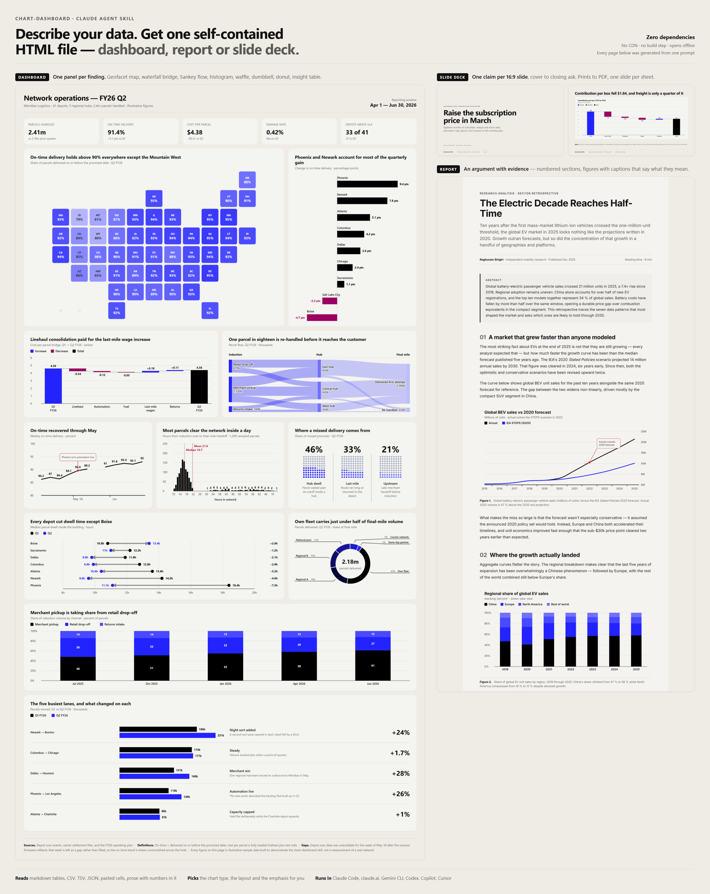

Turn any data into a dashboard, report or slide deck
chart-dashboard is a free, open-source Claude Agent Skill that turns raw data into a finished HTML dashboard, illustrated report or slide deck in a single prompt. Hand Claude a table, a CSV, or a page of notes and get back one self-contained HTML file with interactive SVG charts — no CDN, no build step, no API keys. Vendor-neutral: also works with Gemini CLI, OpenAI Codex, GitHub Copilot, and Cursor.

examples/.Why it exists
Chart libraries render what you tell them to render. This skill decides what to render — which is the part that takes design judgment. It carries a chart-selection table mapping data shapes to chart types, rules for deriving the grid from the findings, and a bundled zero-dependency SVG renderer, so output stays consistent from the first dashboard to the fiftieth. Titles state the finding rather than labelling the axes, the chart emphasises whatever the title names, and projections are never drawn in the same stroke as measurements.
| chart-dashboard | Chart.js / Plotly | BI tool screenshot | |
|---|---|---|---|
| Input | Plain-language data | Hand-written config | Manual building |
| Picks chart type for you | Yes | No | No |
| Runtime dependencies | None | npm / CDN | SaaS account |
| Works offline | Yes | Usually not | No |
| Output | One portable HTML file | Your app | PNG |
| Cost | Free, MIT | Free | Usually paid |
Install
Claude Code — plugin
/plugin marketplace add raghuramsirigiri/raghuram-skills
/plugin install chart-dashboard@raghuram-skillsClaude Code — manual
git clone https://github.com/raghuramsirigiri/raghuram-skills.git
cp -r raghuram-skills/skills/chart-dashboard ~/.claude/skills/claude.ai, Claude Desktop, and the API
cd raghuram-skills/skills && zip -r chart-dashboard.zip chart-dashboardThen upload it under Settings → Capabilities → Skills.
Gemini CLI, OpenAI Codex, GitHub Copilot, Cursor and other AI tools
Nothing in the skill is Claude-specific — it is Markdown instructions plus a dependency-free JavaScript library. Copy it into your project:
git clone https://github.com/raghuramsirigiri/raghuram-skills.git
cp -r raghuram-skills/skills/chart-dashboard ./.agent-skills/chart-dashboardThen add this block to whichever instruction file your tool reads at startup:
## Dashboards, reports and decks
When asked to build a dashboard, analytics page, data report or slide deck,
follow `.agent-skills/chart-dashboard/SKILL.md`.| Tool | Where that block goes |
|---|---|
| OpenAI Codex, Cursor, Zed, Aider, Jules, opencode | AGENTS.md |
| Gemini CLI, Gemini Code Assist | GEMINI.md |
| GitHub Copilot | .github/copilot-instructions.md |
| Windsurf | .windsurf/rules/chart-dashboard.md |
| Cline / Roo Code | .clinerules/chart-dashboard.md |
| Anything else | Paste SKILL.md into the system prompt |
The repository ships working AGENTS.md, GEMINI.md and
.github/copilot-instructions.md files to copy, plus an
.agents/skills.json manifest for agents that discover skills on
their own. Tool conventions move fast — if a path looks stale, check your
tool's current docs; the block is the only part that matters.
How to use it
Ask in plain language — the skill triggers on its own, no slash command needed.
- “Build me a dashboard from this — Q1 revenue 412k, Q2 438k, Q3 451k, Q4 602k.”
- “Here's our support CSV. Make an analytics page showing ticket volume and backlog.”
- “Write up a retrospective on our 2025 uptime with charts.”
- “Turn this spreadsheet into a client-ready report with our brand colors.”
- “Make a deck for Thursday’s board meeting out of these pricing numbers.”
Examples
Four finished pages live in the repository, one per format. Each opens offline with no server and no network.
- Operations dashboard — one standalone file: a geofacet tile map by US state, a cost waterfall bridge, a Sankey flow, a histogram, waffle grids, a dumbbell, a 100% stacked column, a donut and a bar insight table.
- Pricing decision deck — fifteen 16:9 slides: cover, agenda, section dividers, split and full-bleed evidence, a KPI strip, a two-option compare, a timeline, a quote, a big-stat slide and the closing ask. Prints to PDF one slide per sheet.
- EV market retrospective — a narrative report: numbered sections, figures with interpretive captions, pull quotes, source notes.
- Q4 e-commerce dashboard — a 20-panel bento grid with an annotated revenue trend, channel and device mix, funnel and cohort views.
Frequently asked questions
What are the dependencies?
None. The chart library — charts.js, theme.js, and
charts.css, about 720 KB unminified (about 200 KB gzipped) — is inlined
into the page, so you get one standalone HTML file. There is no npm install, no CDN script tag, no build step, and no
framework. Open the file in any browser from the last decade and it renders.
Does it work offline?
Yes. The finished page makes no network requests at all — no CDN and no web font. It uses Inter when installed and falls back to Segoe UI or Helvetica, and the bundled checker fails any page that reaches for the network.
Is my data sent anywhere?
The generated HTML makes no network calls and contains no analytics or telemetry. Your data is embedded in the file itself and stays wherever you put the file. Claude itself processes your prompt normally — this skill adds no extra data flow.
Can I use chart-dashboard commercially?
Yes. MIT licensed, including client work and commercial products. Attribution is appreciated but not required.
Does it work in Claude Code, claude.ai, or both?
Both, plus Claude Desktop and the Claude API. The Agent Skills format is shared across all of them — see Install for the path matching your setup.
Does it work with Gemini, Codex, Copilot, or Cursor?
Yes. The skill is vendor-neutral — plain Markdown instructions plus a
dependency-free JavaScript library, with no Claude-specific tools or APIs
required. Copy the skill folder into your project and reference it from your
tool's instruction file: AGENTS.md for OpenAI Codex, Cursor, Zed
and Aider; GEMINI.md for Gemini CLI; or
.github/copilot-instructions.md for GitHub Copilot. The
repository ships all three as working examples.
Can it make a slide deck or a presentation?
Yes. Ask for slides, a deck or a presentation and you get a 16:9 deck: one
claim per slide, a fixed spine — cover, agenda, a divider per section, a closing
ask — and eighteen slide layouts chosen per claim, from split and full-bleed
figures to KPI strips, two-option compares, matrices, timelines, quotes and
big-stat slides. It is an HTML file rather than a .pptx: it opens in
any browser and needs no PowerPoint or Google Slides account.
Can I export it to PDF, PNG or PowerPoint?
PDF — yes, from the browser's own print dialog. A deck prints as A4 landscape, one slide per sheet, at exactly 16:9; a dashboard or report prints as the page you see. PNG — screenshot the page, or copy out an individual chart, which is plain inline SVG. PowerPoint — no; the output is HTML by design, which is what keeps it one dependency-free file that renders identically everywhere.
How is this different from asking Claude for a chart directly?
Without the skill, Claude reaches for whatever library it guesses at, output quality swings between prompts, and pages often break offline because of CDN script tags. The skill fixes the renderer, carries a chart-selection table so the chart type matches the data shape, and enforces layout rules — so the tenth dashboard looks like the first.
Can I edit the generated dashboard afterwards?
Yes. Ask for an editable page and it ships with an in-page editor:
click Edit page to change text and numbers, switch chart types, recolour
marks, and remove or move content, then save. Otherwise the output is readable
HTML with one Charts.*() call per panel. Edit the data arrays by hand, or ask Claude to change a panel and it will
edit the file in place.
How many panels should a dashboard have?
As many as there are findings. The skill puts one panel per question the data answers rather than filling a fixed grid — four numbers get a small page, twenty measures get a long one.
Which chart types are supported?
Line, spline and step; grouped, stacked, 100% stacked, range, pyramid and 3D
columns and bars; axis-free ranked bar lists; bar insight tables pairing each
row's bars with an insight line and a headline stat; waffle dot grids for
part-of-whole shares; donut and pie including semi-circle
and variable radius; scatter with linear regression; bubble and packed bubble;
geofacet tile grids (bar, heat or gauge tiles per region, US states built in);
dumbbells, histograms, waterfalls, Sankey flows, radar charts and tables;
and a panels compositor that groups several charts under one shared title.
True geographic maps, treemaps and heatmaps are not supported yet.
Do all the dashboards come out looking the same?
They shouldn't. The layout is derived from the shape of the analysis — one dominant trend opens differently from a head-to-head comparison, a ranking, or six co-equal measures — and the templates ship without a starter grid so no single arrangement gets copied onto every page. What stays constant is the design system: type scale, spacing, legend position and stroke weights.
Can the page have filters?
Yes, and they're wired end to end: the dataset is filtered rather than the label swapped, every dependent panel and KPI redraws, and any title stating a finding is recomputed from the filtered rows. All or nothing — a half-wired dropdown discredits the numbers that are correct.
Can it match our brand colours?
Point it at your stylesheet, a screenshot, or a single hex. Two bundled scripts run the same OKLCH recipe — paper, a greyscale ink ramp, a seven-step series ramp, and separate accent, annotation and counter roles, each contrast checked. Colour is the only thing a brand changes; the type scale and spacing stay fixed so the charts still read as one family.
Built by
Raghuram Sirigiri — issues and pull requests welcome on GitHub. If the skill saved you time, a star helps other people find it.